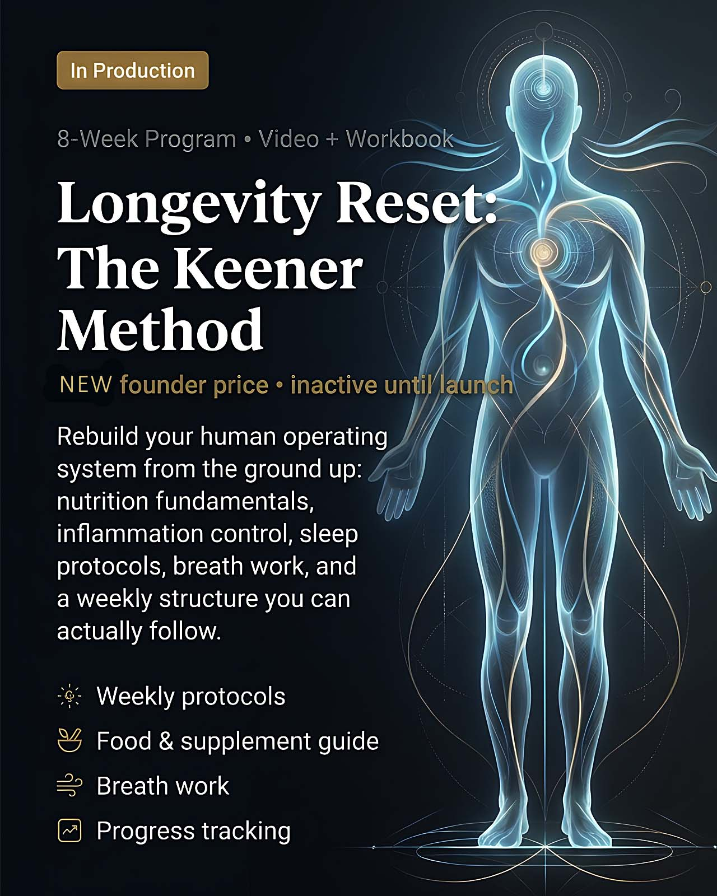
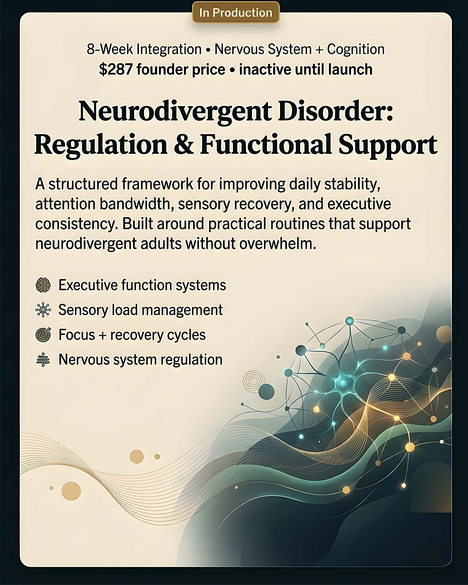
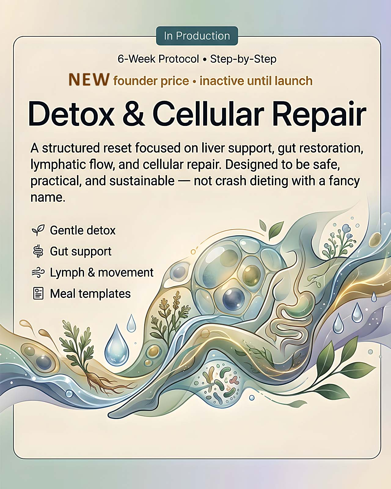
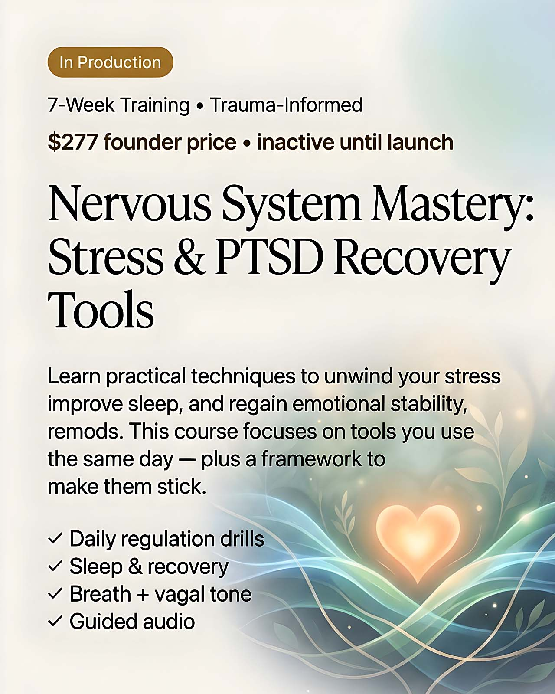

Courses (In Production)
Four flagship programs Dr. Jessie is writing right now — built for people who want a clear plan, measurable progress, and real-world results (no woo-woo without receipts).




Course purchase and refund terms: checkout URLs are configured but remain inactive until launch QA is complete. At launch, all enrollments are governed by Course Purchase Terms and Course Refund Policy.
Checkout URLs: course-checkout.html?course=longevity-reset course-checkout.html?course=neurodivergent-disorder course-checkout.html?course=detox-repair course-checkout.html?course=nervous-system-mastery
Longevity Reset: The Keener Method — 8-Week Program
This program is structured to help participants rebuild core health systems through practical nutrition, inflammation reduction, sleep optimization, breath regulation, and measurable weekly implementation.
Expected outcomes
- Build a repeatable daily framework for nutrition, sleep, stress, and recovery.
- Identify high-impact habits and remove low-value routines that stall progress.
- Track tangible weekly metrics (energy, sleep quality, stress load, consistency).
- Leave with a personalized 90-day maintenance plan.
Weekly structure (finalized)
- Week 1: Baseline assessment and reset architecture.
- Week 2: Anti-inflammatory nutrition and metabolic stability.
- Week 3: Sleep repair protocols and circadian consistency.
- Week 4: Breath-based nervous system regulation.
- Week 5: Movement dosage and recovery sequencing.
- Week 6: Gut and foundational supplement strategy.
- Week 7: Habit lock-in and relapse prevention systems.
- Week 8: Long-term longevity plan + quarterly checkpoint model.
Who this is for / not for
- Good fit: adults wanting a practical longevity framework with accountability.
- Best results: participants willing to apply weekly action steps consistently.
- Not emergency care: this educational program does not replace direct medical treatment.
Included materials (finalized)
- 8 instructional modules + implementation workbook.
- Weekly protocol checklists and progress dashboards.
- Food and supplement planning templates.
- Breathwork and sleep optimization routines.
Neurodivergent Disorder: Regulation & Functional Support — 8-Week Program
This course is designed to help neurodivergent participants build practical systems for regulation, focus, emotional stability, and sustainable daily performance.
Expected outcomes
- Create a repeatable daily operating framework that reduces overload and decision fatigue.
- Improve focus windows using pacing, sensory boundaries, and recovery intervals.
- Build executive-function support systems for planning, transitions, and follow-through.
- Leave with a personalized maintenance plan for high-demand weeks.
Weekly structure (finalized)
- Week 1: Baseline map, overload triggers, and regulation priorities.
- Week 2: Sensory architecture and environmental friction reduction.
- Week 3: Focus-cycle design and cognitive energy budgeting.
- Week 4: Executive-function scaffolding for planning and task initiation.
- Week 5: Emotional regulation drills and nervous-system downshift tools.
- Week 6: Sleep/recovery repair and consistency guardrails.
- Week 7: Communication boundaries and social-load management.
- Week 8: Long-term integration plan and relapse-prevention strategy.
Who this is for / not for
- Good fit: neurodivergent adults who want practical structure and measurable progress.
- Best results: participants willing to apply routines daily and review data weekly.
- Not crisis care: this educational course does not replace psychiatric, emergency, or acute clinical support.
Included materials (finalized)
- 8 guided modules + implementation workbook.
- Executive-function templates and transition checklists.
- Sensory-load tracker and focus-cycle planning sheets.
- Regulation routine library and maintenance planner.
Detox & Cellular Repair — 6-Week Protocol
This program draft is designed to walk participants through a practical repair sequence: reduce load, support elimination, rebuild digestion, and stabilize habits for long-term resilience.
Expected outcomes
- Understand the difference between safe detox support and aggressive protocols.
- Build a repeatable weekly routine for food quality, hydration, sleep, and movement.
- Use a symptom tracker to identify which interventions are helping.
- Create a personal maintenance plan after week 6.
Weekly structure (draft)
- Week 1: Intake baseline, routines, and readiness checklist.
- Week 2: Gentle elimination support and hydration architecture.
- Week 3: Gut support foundations and meal templates.
- Week 4: Lymphatic flow, breathing, and movement integration.
- Week 5: Cellular repair emphasis and recovery pacing.
- Week 6: Re-entry strategy and long-term maintenance protocol.
Who this is for / not for
- Good fit: adults who want a structured reset with realistic pacing.
- Requires caution: people with complex conditions or active treatment plans.
- Not suitable without clinician approval: pregnancy, breastfeeding, severe chronic illness, or recent acute medical events.
Included materials (planned)
- 6 core lessons + implementation workbook.
- Weekly checklists and symptom/progress tracker.
- Meal framework templates and shopping guidance.
- Breath + movement support routines.
Nervous System Mastery — 7-Week Trauma-Informed Training
This draft program is built to improve daily regulation capacity through repeatable drills, recovery sequencing, and clear escalation boundaries for higher-stress days.
Expected outcomes
- Build a daily regulation stack for morning, midday, and evening use.
- Recognize stress activation patterns and apply same-day downshifting tools.
- Improve sleep preparation and overnight recovery consistency.
- Establish a personal relapse-prevention and maintenance framework.
Weekly structure (draft)
- Week 1: Baseline mapping and regulation fundamentals.
- Week 2: Breath protocols for rapid down-regulation.
- Week 3: Vagal tone routines and body-based stabilization.
- Week 4: Sleep reset architecture and evening decompression.
- Week 5: Trigger rehearsal and recovery sequencing.
- Week 6: Social stress + performance resilience tools.
- Week 7: Long-term integration and self-guided maintenance plan.
Trauma-informed scope
- Educational skills training focused on regulation tools.
- Not a substitute for emergency, psychiatric, or crisis care.
- Participants are encouraged to coordinate with licensed providers when needed.
Included materials (planned)
- 7 guided modules with daily implementation prompts.
- Audio routine library for calming, grounding, and sleep prep.
- Stress log and recovery tracking worksheets.
- Weekly integration checklist and maintenance planner.